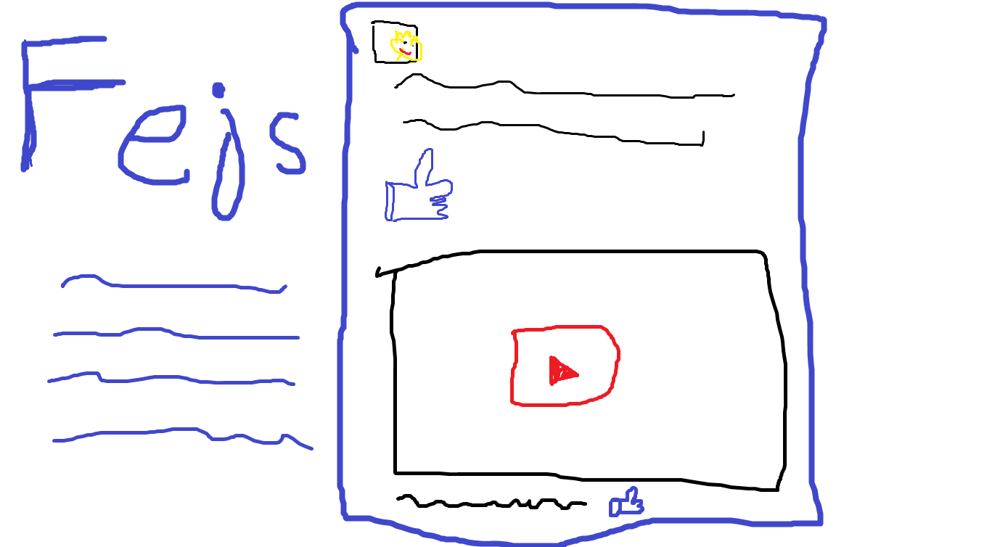

HTML je kratica od HyperText Markup Language. Trenutna inačica je 5.2. Nekoliko linkova na temu HTML-a dano je u nastavku.
Ovo je moj html koji nije za stvarno facebook, ali se html dohvatio s mog servera i to je fkt kul realno.
Evo kako to inače izgleda
